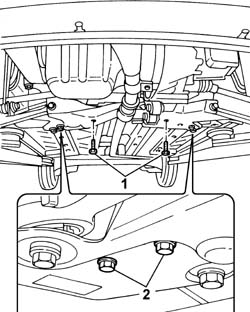
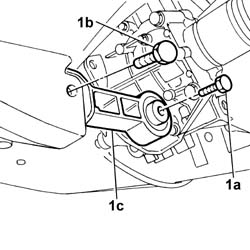
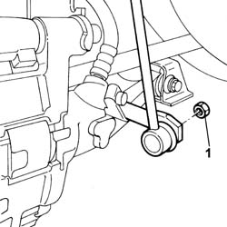
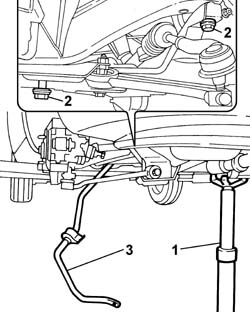

4410c10 front suspension stabilizer bar - r+r - check wheel geometry separately
- Path
- Procedures > 44 SUSPENSION AND WHEELS > 4410 FRONT SUSPENSION > 4410C stabilizer bar and anchorage struts > 4410c10 front suspension stabilizer bar - r+r - check wheel geometry separately
- Kind
- repair procedure (removal / refitting; the operation number is the code)
- Applies to
- all engines; all production periods
- Interactive page
- https://sloeber94.github.io/elrnDB-fPnd/en/#/2752802
Applies to: all engines; all production periods
 Removing
Removing
 Refitting
RefittingPlace the car on a ramp.
4450B12 front or rear wheels (two) - r+r
1. Undo the bolts securing the steering box to the crossmember.
2. Undo the bolts fixing the U-bolts securing the anti-roll bar to the suspension crossmember.

Applies to: all engines; all production periods
1. Undo the fixing bolts (1a) and (1b), then remove the lower reaction rod (1c).

Applies to: all engines; all production periods
1. Undo the left and right nuts securing the anti-roll bar to the anchorage rods.

Applies to: all engines; all production periods
1. Position a hydraulic jack underneath the suspension crossmember.
2. Undo the bolts fixing the front suspension crossmember to the bodyshell.
Lower the suspension frame slowly.
3. Remove the anti-roll bar via the right wheel arch.

Applies to: all engines; all production periods
Refitting
RemovingFit the anti-roll bar via the right wheel arch.
Raise the suspension crossmember using the supporting device.
Tighten the bolts fixing the suspension crossmember to the bodyshell to torque.
 | Fastening | Component | Ø | Value (daNm) |
|---|---|---|---|---|
- | Bolt | FRONT SUSPENSION SUBFRAME | M12 x 1.25 | 8 |
Tighten the bolts for the left and right U-bolts fixing the anti-roll bar to the crossmember to torque.
| Fastening | Component | Ø | Value (daNm) |
|---|---|---|---|---|
- | Bolt | FRONT ANTI-ROLL BAR | M8 | (Crossmember) 2.3 |
Tighten the nuts fixing the anti-roll bar to the anchorage rods to torque.
| Fastening | Component | Ø | Value (daNm) |
|---|---|---|---|---|
- | Bolt | FRONT ANTI-ROLL BAR | M8 | (Rods) 2.3 |
Tighten the bolts fixing the steering box to the crossmember to torque.
| Fastening | Component | Ø | Value (daNm) |
|---|---|---|---|---|
- | Bolt | STEERING BOX (RACK AND PINION) | M12 x 1.25 | 8 |
Fit the lower reaction rod and tighten the bolts fixing it to the crossmember and to the gearbox.
| Fastening | Component | Ø | Value (daNm) |
|---|---|---|---|---|
- | Bolt | POWER UNIT BOTTOM REACTION ROD | M12 x 1.25 | (Crossmember side) 8 |
| Fastening | Component | Ø | Value (daNm) |
|---|---|---|---|---|
- | Bolt | POWER UNIT BOTTOM REACTION ROD | M12 x 1.25 | (Gearbox side) 8 |
4450B12 front or rear wheels (two) - r+r .
Lower the left and remove the vehicle.